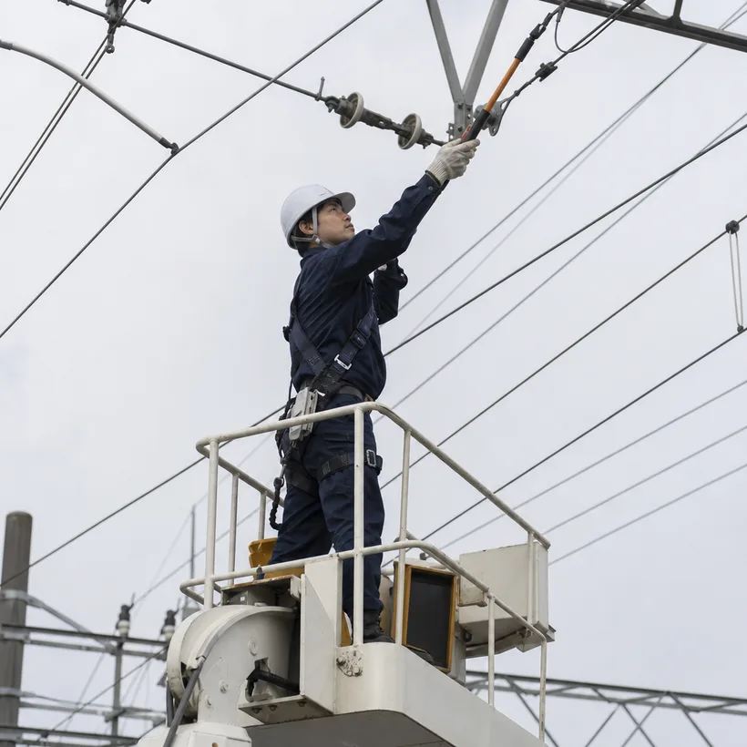
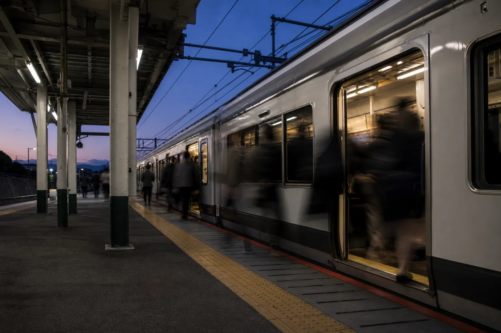

電車線
Catenary電車の屋根の上を通る架線と、それを支える電柱・金具の工事です。トロリ線の張り替え、金具の交換、新しい線路への架線の新設などを受け持ちます。
- 架線の張り替え・新設
- 支持物（電柱・ビーム）の建て替え
- 冬季の着雪・着氷への対策
Entry
応募区分をお選びください。募集要項をご確認のうえ、必要事項をお送りいただきます。
お急ぎの方は採用担当まで直接ご連絡ください。
076-297-3180（平日9:00〜17:30）／ recruit@sendec-es.co.jp

雪の朝も、いつもの時刻に。
私たちが受け持つのは、石川・富山・福井・長野の各地を走る在来線と駅です。通勤や通学、病院への通院。沿線の人たちの毎日は、時刻どおりに来る電車に支えられています。
北陸・信越の冬は、鉄道の電気設備にとっても試練の季節です。架線に雪や氷が付けば、電車は電気をうまく受け取れません。冬が来る前に設備を点検し、雪の夜には待機して朝に備える。地域の気候を知り尽くしていることが、この土地の会社である私たちの強みです。
入社後は四つの分野のいずれかに所属し、施工管理と技術の両方を身につけていきます。
配属は研修中の実習と面談をふまえて決めます。
電車の屋根の上を通る架線と、それを支える電柱・金具の工事です。トロリ線の張り替え、金具の交換、新しい線路への架線の新設などを受け持ちます。
電力会社から受けた電気を、電車が使える電気に変える変電所の工事です。変圧器や遮断器などの機器の更新、保護装置の試験を行います。
列車どうしの間隔を保つ信号機、踏切の警報機と遮断機、運転指令とつながる通信設備の工事です。一本のケーブルの誤りも許されない分野です。
ホームと駅舎の照明、エレベーターやエスカレーターの電源、案内表示や放送設備など、駅を利用する人の目に触れる電気の工事です。
昼間に現地を歩いて、設備の状態と作業の範囲を確かめます。発注者と打ち合わせ、工法と工程を決めます。
作業手順書をつくり、材料と人員、高所作業車などの機材を手配します。夜の作業はこの段取りで決まります。
最終列車の通過後、線路閉鎖と停電の手続きを経てから作業に入ります。全員で手順を声に出して確認します。
作業を終えたら測定と試験を行い、設備がもとどおり使える状態か確かめます。始発の前に必ず引き上げます。
試験の結果と写真をまとめて発注者に報告します。記録は次の点検や工事の土台になります。
電車線の担当者が夜間の張り替え工事に入る日の例です。夜間作業は月に6〜8回ほどで、翌日は休息日になります。
出社。工事の書類と材料を最終確認する
班で打ち合わせ。手順と役割分担、危険箇所を全員で読み合わせる
夕食と仮眠。夜に備えて体を休める
現場の詰所に集合。作業車と機材を準備する
最終列車が通過。線路閉鎖と停電を確認してから作業開始
作業終了。測定と試験を行い、線路上に物が残っていないか確かめる
線路閉鎖を解除して引き上げ。始発の通過を見届ける
報告をまとめて退勤。この日は休息日
開業から年数のたった区間で、すり減ったトロリ線を新しくする工事でした。一晩で作業できるのは電柱と電柱のあいだ2つぶん。張力の調整に時間をとられないよう、昼のうちに金具を組んでおく段取りを班全体で工夫し、予定どおり12夜で終えました。

変電所の機器を更新するあいだも、電車は毎日走ります。隣の変電所から電気を送ってもらえるよう切り替えの手順を組み、機器を一台ずつ入れ替えました。切り替えのたびに保護装置の試験を行い、記録を積み上げていく工事です。

照明の更新は、駅が開いている時間に進める部分もあります。通路を確保し、案内係を置いて、利用する人の動きを止めないように作業しました。新しい照明は足もとが明るくなるよう配置を見直し、夜のホームの見通しがよくなりました。
現場の音と手つきを、そのまま映像に残しています。動画は会社説明会・職場見学の会場と、オンライン説明会で上映しています。
約7分朝の点検から機器の切り替え試験まで。指差しと声出しで確かめる手順を、そのまま撮りました。
線路閉鎖の連絡が入ってから、架線の張り替えを終えて引き上げるまでの4時間を追いました。
 約6分
約6分研修棟での実習を終えて、はじめて現場に出た新入社員3人の4月です。
 約12分
約12分入社年も分野も違う4人が、休み方や雪の日の働き方まで話しました。